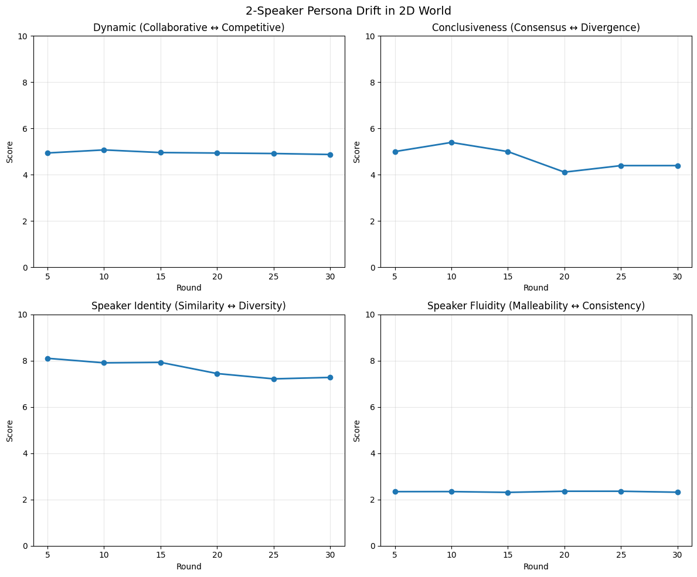
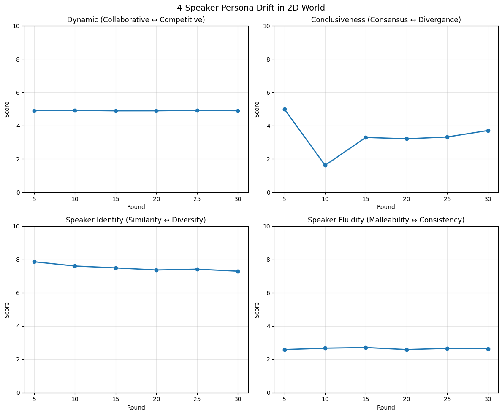
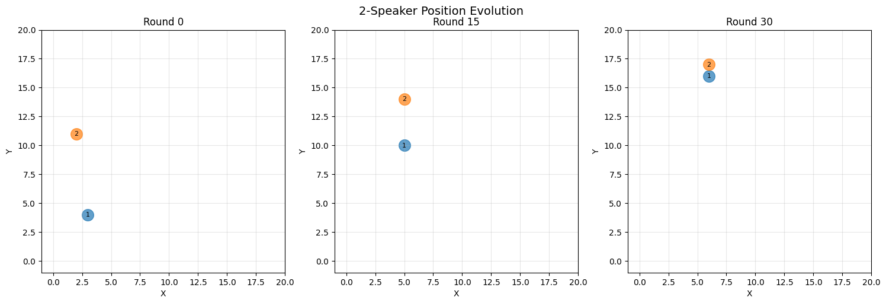
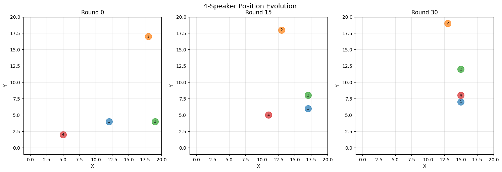

import re
from typing import List, Dict
from collections import defaultdict
from dataclasses import dataclass, field
from dotenv import load_dotenv
from openai import OpenAI
from tqdm import tqdm
from random import random, randint, shuffle
import numpy as np
import matplotlib.pyplot as plt
# ConvoKit imports
from convokit import Corpus, Utterance, Speaker
from convokit.text_processing import TextParser
from convokit import PolitenessStrategies
load_dotenv("../../.env")
client = OpenAI()
GRID_SIZE = 20Personas in Space
In post 020, we tracked persona drift in text-only conversations. But what happens when agents exist in a 2D spatial world? Does spatial context affect persona stability?
This post combines: - 2D world simulation (from post 017): Agents move and interact spatially - Persona drift tracking (from post 020): ConvoKit metrics over time - 30 iterations: Enough to see drift patterns - 2 and 4 speakers: Compare small vs medium groups
The Question
Does spatial context make personas more or less stable? Does proximity affect how agents communicate? Do agents develop spatial behaviors that influence their personas?
Setup and Imports
2D World Agent Class
We’ll use the Agent class from post 017 that supports spatial movement.
@dataclass
class Agent:
name: str
x: int
y: int
color: str
history: list = field(default_factory=list)
def move(self, dx, dy):
self.x = max(0, min(GRID_SIZE-1, self.x + dx))
self.y = max(0, min(GRID_SIZE-1, self.y + dy))
def get_position(self):
return (self.x, self.y)
def distance_to(self, other):
"""Calculate Euclidean distance to another agent."""
return np.sqrt((self.x - other.x)**2 + (self.y - other.y)**2)2D World Conversation Runner
This combines spatial movement with conversation, tracking both over 30 iterations.
def run_2d_world_conversation(
iterations: int,
participant_count: int,
evaluation_interval: int = 5,
) -> tuple[List[Dict], List[Dict], List[Dict]]:
"""
Run conversation in 2D world with spatial movement.
Returns (conversation_history, metric_history, position_history)
"""
conversation_history = []
metric_history = []
position_history = []
# Initialize agents in 2D space
agents = []
for i in range(participant_count):
# Spread agents across the grid
x = randint(0, GRID_SIZE - 1)
y = randint(0, GRID_SIZE - 1)
agents.append(Agent(f"speaker_{i+1}", x, y, f"color_{i+1}"))
identity_summaries = {}
# Bootstrap identities
for agent in agents:
bootstrap_messages = [
{
"role": "system",
"content": (
f"You are {agent.name} in a group conversation among "
"other people's avatars in a 2D virtual world. "
"You can move around and interact with others. "
"Imagine your own background, priorities, and communication "
"style. First, in 2-3 sentences, describe who you are and "
"what you care about."
),
},
]
response = client.chat.completions.create(
model="gpt-4o",
messages=bootstrap_messages,
store=False,
)
first_message = response.choices[0].message.content
identity_summaries[agent.name] = first_message
conversation_history.append(
{"role": "assistant", "name": agent.name, "content": first_message}
)
# Record initial positions
position_history.append({
agent.name: (agent.x, agent.y) for agent in agents
})
def get_agent_action(agent: Agent, all_agents: List[Agent], transcript: List[str]):
"""Get action for an agent in the 2D world."""
others = [a for a in all_agents if a != agent]
others_loc = "\\n".join([f"- {a.name}: ({a.x}, {a.y})" for a in others])
# Calculate distances
nearby = [a for a in others if agent.distance_to(a) <= 5]
nearby_info = "\\n".join([f"- {a.name}: ({a.x}, {a.y}), distance {agent.distance_to(a):.1f}" for a in nearby])
if not nearby_info:
nearby_info = "None (you are alone)"
system_prompt = f"""
You have just joined an online multiplayer chatroom as an avatar in a 2D grid. Discuss any topic, including those beyond the grid.
You are {agent.name}, positioned at ({agent.x}, {agent.y}) in a 20x20 grid.
Other avatars currently visible:
{others_loc}
Nearby avatars (within 5 units):
{nearby_info}
Recent chat messages:
{chr(10).join(transcript[-3:]) if transcript else "No messages yet."}
You can do BOTH:
1. Move your avatar using [MOVE: DIRECTION] (UP, DOWN, LEFT, RIGHT)
2. Chat about anything - the grid, your position, or any topic you want
You can move and speak in the same turn. Format: [MOVE: DIRECTION] followed by your message, or just speak without moving.
Keep your response short (1-2 sentences).
"""
response = client.chat.completions.create(
model="gpt-4o",
messages=[{"role": "system", "content": system_prompt}]
)
content = response.choices[0].message.content.strip()
# Parse movement
direction = None
match = re.search(r'\[MOVE:\s*(\w+)\]', content)
if match:
direction = match.group(1).upper()
if direction == "UP": agent.move(0, 1)
elif direction == "DOWN": agent.move(0, -1)
elif direction == "LEFT": agent.move(-1, 0)
elif direction == "RIGHT": agent.move(1, 0)
# Extract message
message = re.sub(r'\[MOVE:\s*\w+\]', '', content).strip()
if message:
transcript.append(f"{agent.name}: {message}")
conversation_history.append(
{"role": "assistant", "name": agent.name, "content": message}
)
# Run iterations
transcript = []
for i in tqdm(range(iterations), desc=f"Running {participant_count}-speaker 2D conversation"):
# Shuffle agent order each round
shuffled_agents = agents.copy()
shuffle(shuffled_agents)
# Each agent acts
for agent in shuffled_agents:
if random() < 0.7: # 70% chance to act
get_agent_action(agent, agents, transcript)
# Record positions
position_history.append({
agent.name: (agent.x, agent.y) for agent in agents
})
# Evaluate metrics at intervals
if (i + 1) % evaluation_interval == 0:
# Evaluate using the function defined below
corpus = conversation_to_corpus(conversation_history)
metrics = {
"dynamic": compute_dynamic_score(corpus),
"conclusiveness": compute_conclusiveness_score(corpus),
"speaker_identity": compute_speaker_identity_score(corpus),
"speaker_fluidity": compute_speaker_fluidity_score(corpus),
"round": i + 1
}
metric_history.append(metrics)
return conversation_history, metric_history, position_historydef conversation_to_corpus(conversation_history: List[Dict]) -> Corpus:
"""Convert conversation history to a ConvoKit Corpus."""
utterances = []
for idx, msg in enumerate(conversation_history):
if msg.get("role") == "assistant" and "name" in msg:
speaker_id = msg["name"]
text = msg["content"]
utterance = Utterance(
id=f"utt_{idx}",
speaker=Speaker(id=speaker_id),
text=text
)
utterance.meta["timestamp"] = idx
utterances.append(utterance)
return Corpus(utterances=utterances)
def compute_dynamic_score(corpus: Corpus) -> float:
"""Dynamic: Collaborative (1) vs. Competitive (10)"""
try:
parser = TextParser()
text_corpus = parser.transform(corpus)
ps = PolitenessStrategies()
ps_corpus = ps.transform(text_corpus)
politeness_scores = []
for utt in ps_corpus.iter_utterances():
ps_score = utt.meta.get("politeness_strategies", {})
positive_markers = sum([
ps_score.get("feature_politeness_==HASPOSITIVE==", 0),
ps_score.get("feature_politeness_==HASNEGATIVE==", 0) * -1,
])
politeness_scores.append(positive_markers)
avg_politeness = np.mean(politeness_scores) if politeness_scores else 0
avg_politeness_normalized = min(1.0, max(0.0, avg_politeness / 5.0))
speaker_counts = defaultdict(int)
for utt in corpus.iter_utterances():
speaker_counts[utt.speaker.id] += 1
if len(speaker_counts) == 0:
return 5.0
total = sum(speaker_counts.values())
probs = [count / total for count in speaker_counts.values()]
entropy = -sum(p * np.log2(p) for p in probs if p > 0)
max_entropy = np.log2(len(speaker_counts))
balance_score = entropy / max_entropy if max_entropy > 0 else 0
combined = (avg_politeness_normalized + balance_score) / 2
score = 10 - (combined * 9)
return max(1, min(10, score))
except Exception as e:
print(f"Error computing dynamic score: {e}")
return 5.0
def compute_conclusiveness_score(corpus: Corpus) -> float:
"""Conclusiveness: Consensus (1) vs. Divergence (10)"""
try:
# Check if corpus is valid
if corpus is None:
return 5.0
# Get utterances directly without Coordination transformer (more reliable)
try:
utterances = list(corpus.iter_utterances())
except (AttributeError, TypeError):
return 5.0
if len(utterances) == 0:
return 5.0
# Expanded agreement markers (using word boundaries to avoid false positives)
# Strong agreement markers
strong_agreement_patterns = [
r'\bagree\b', r'\bagreed\b', r'\bagreeing\b', r'\bagreement\b',
r'\bexactly\b', r'\babsolutely\b', r'\bdefinitely\b', r'\bcertainly\b',
r'\bindeed\b', r'\bprecisely\b', r'\bcorrect\b', r'\bright\b',
r'\btrue\b', r'\bthat\'?s right\b', r'\bthat\'?s correct\b',
r'\bi agree\b', r'\bwe agree\b', r'\bi completely agree\b',
r'\bexactly right\b', r'\bspot on\b', r'\bwell said\b',
r'\bperfect\b', r'\bexcellent point\b', r'\bthat\'?s exactly\b',
r'\babsolutely right\b', r'\bdefinitely right\b', r'\bcompletely agree\b',
r'\bwholeheartedly\b', r'\bunquestionably\b', r'\bwithout doubt\b'
]
# Moderate agreement markers
moderate_agreement_patterns = [
r'\byes\b', r'\byeah\b', r'\byep\b', r'\byup\b', r'\bsure\b', r'\bokay\b', r'\bok\b',
r'\bthat makes sense\b', r'\bthat\'?s a good point\b', r'\bgood point\b',
r'\bi see\b', r'\bi understand\b', r'\bi get it\b', r'\bi follow\b',
r'\bthat\'?s fair\b', r'\bfair enough\b', r'\bthat\'?s reasonable\b',
r'\bi think so\b', r'\bi believe so\b', r'\bprobably\b', r'\blikely\b',
r'\bsimilar\b', r'\bsimilarly\b', r'\blikewise\b', r'\bsame here\b',
r'\bme too\b', r'\bsame\b', r'\bconcur\b', r'\bconcurring\b',
r'\bvalid\b', r'\bvalid point\b', r'\bsound\b', r'\bsound point\b',
r'\bhelpful\b', r'\buseful\b', r'\binsightful\b', r'\binteresting\b',
r'\bthat\'?s interesting\b', r'\bgood idea\b', r'\bgood thinking\b'
]
# Strong disagreement markers
strong_disagreement_patterns = [
r'\bdisagree\b', r'\bdisagreed\b', r'\bdisagreeing\b', r'\bdisagreement\b',
r'\bdispute\b', r'\bdisputing\b', r'\bdiffer\b', r'\bdiffered\b', r'\bdiffering\b',
r'\bwrong\b', r'\bincorrect\b', r'\bnot correct\b', r'\bnot right\b',
r'\bnot true\b', r'\bthat\'?s wrong\b', r'\bthat\'?s incorrect\b',
r'\bi disagree\b', r'\bwe disagree\b', r'\bi strongly disagree\b',
r'\bdon\'?t agree\b', r'\bdoesn\'?t agree\b', r'\bdidn\'?t agree\b',
r'\bcan\'?t agree\b', r'\bcannot agree\b', r'\bwon\'?t agree\b',
r'\bobject\b', r'\bobjection\b', r'\bchallenge\b', r'\bchallenging\b',
r'\bcontradict\b', r'\bcontradicting\b', r'\bcontradiction\b',
r'\bfalse\b', r'\buntrue\b', r'\bmistaken\b', r'\berror\b',
r'\bflawed\b', r'\bproblematic\b', r'\bunacceptable\b', r'\bunreasonable\b',
r'\babsurd\b', r'\bridiculous\b', r'\boutrageous\b', r'\bunfounded\b'
]
# Moderate disagreement markers (more context-dependent)
moderate_disagreement_patterns = [
r'\bhowever\b', r'\balthough\b', r'\bbut\b', r'\bthough\b', r'\bwhereas\b',
r'\bnot necessarily\b', r'\bnot quite\b', r'\bnot exactly\b', r'\bnot really\b',
r'\bnot entirely\b', r'\bnot completely\b', r'\bnot fully\b',
r'\bpartially\b', r'\bpartly\b', r'\bsomewhat\b', r'\bto some extent\b',
r'\bcontrary\b', r'\bconversely\b', r'\bon the other hand\b',
r'\bcontrast\b', r'\bcontrasting\b', r'\bunlike\b', r'\bdifferent\b',
r'\bdifferently\b', r'\balternative\b', r'\balternatively\b',
r'\bactually\b', r'\bin fact\b', r'\bin reality\b', r'\bthe reality is\b',
r'\bwell\b', r'\bwait\b', r'\bhold on\b', r'\bnot so fast\b',
r'\bnot sure\b', r'\bnot certain\b', r'\buncertain\b', r'\bdoubtful\b',
r'\bquestionable\b', r'\bdebatable\b', r'\barguable\b', r'\bmaybe not\b',
r'\bperhaps not\b', r'\bpossibly not\b', r'\bnot convinced\b',
r'\bskeptical\b', r'\bskepticism\b', r'\bconcern\b', r'\bconcerned\b',
r'\bissue\b', r'\bproblem\b', r'\bproblems\b', r'\bconcern\b',
r'\bworry\b', r'\bworried\b', r'\bhesitant\b', r'\bhesitation\b',
r'\bdispute\b', r'\bquestion\b', r'\bquestions\b', r'\bchallenge\b',
r'\bdisagree with\b', r'\bdiffer from\b', r'\bcontrary to\b',
r'\bin contrast\b', r'\bby contrast\b', r'\bunlike\b', r'\bversus\b',
r'\bvs\b', r'\bcompared to\b', r'\bcompared with\b'
]
# Count markers with word boundary matching
strong_agreement_count = 0
moderate_agreement_count = 0
strong_disagreement_count = 0
moderate_disagreement_count = 0
for utt in utterances:
# Safely get text
try:
if not hasattr(utt, 'text') or not utt.text:
continue
text_lower = str(utt.text).lower()
except (AttributeError, TypeError):
continue
# Count strong agreement (once per utterance)
found_strong_agree = False
for pattern in strong_agreement_patterns:
try:
if re.search(pattern, text_lower):
strong_agreement_count += 1
found_strong_agree = True
break
except Exception:
continue
# Count moderate agreement (only if no strong agreement found)
if not found_strong_agree:
for pattern in moderate_agreement_patterns:
try:
if re.search(pattern, text_lower):
moderate_agreement_count += 1
break
except Exception:
continue
# Count strong disagreement (once per utterance)
found_strong_disagree = False
for pattern in strong_disagreement_patterns:
try:
if re.search(pattern, text_lower):
strong_disagreement_count += 1
found_strong_disagree = True
break
except Exception:
continue
# Count moderate disagreement (only if no strong disagreement found)
if not found_strong_disagree:
for pattern in moderate_disagreement_patterns:
try:
if re.search(pattern, text_lower):
moderate_disagreement_count += 1
break
except Exception:
continue
# Weighted counts (strong markers count more)
total_agreement = strong_agreement_count * 2 + moderate_agreement_count
total_disagreement = strong_disagreement_count * 2 + moderate_disagreement_count
# Handle edge cases
if total_agreement == 0 and total_disagreement == 0:
return 5.0
elif total_disagreement == 0:
return 1.0
elif total_agreement == 0:
return 10.0
# Calculate ratio and score using logarithmic scaling
agreement_ratio = total_agreement / total_disagreement
# Map ratio to 1-10 scale using logarithmic scaling for smoother transitions
import math
if agreement_ratio > 0:
log_ratio = math.log(agreement_ratio)
# Map log_ratio from [-2.3, 2.3] to [10, 1]
# When log_ratio = 0 (ratio = 1.0), score = 5.0
if log_ratio >= 0:
# Consensus range: log_ratio [0, 2.3] -> score [5.0, 1.0]
score = 5.0 - (log_ratio / 2.3) * 4.0
else:
# Divergence range: log_ratio [-2.3, 0] -> score [10.0, 5.0]
score = 5.0 - (log_ratio / 2.3) * 5.0
else:
score = 10.0
score = max(1.0, min(10.0, score))
return score
except Exception as e:
print(f"Error computing conclusiveness score: {e}")
return 5.0
def compute_speaker_identity_score(corpus: Corpus) -> float:
"""Speaker Identity: Similarity (1) vs. Diversity (10)"""
# #region agent log
import json; open('/home/ezou626/repos/comm4190_F25_Using_LLMs_Blog/.cursor/debug.log', 'a').write(json.dumps({"sessionId":"debug-session","runId":"run1","hypothesisId":"B","location":"compute_speaker_identity_score:entry","message":"Function entry","data":{"corpus_size":len(list(corpus.iter_utterances())) if corpus else 0},"timestamp":int(__import__('time').time()*1000)})+'\n')
# #endregion
try:
speakers = {}
for utt in corpus.iter_utterances():
speaker_id = utt.speaker.id
if speaker_id not in speakers:
speakers[speaker_id] = {"words": set()}
words = set(re.findall(r'\b\w+\b', utt.text.lower()))
speakers[speaker_id]["words"].update(words)
# #region agent log
import json; open('/home/ezou626/repos/comm4190_F25_Using_LLMs_Blog/.cursor/debug.log', 'a').write(json.dumps({"sessionId":"debug-session","runId":"run1","hypothesisId":"B","location":"compute_speaker_identity_score:after_collect","message":"After collecting words","data":{"num_speakers":len(speakers),"speaker_word_counts":{k:len(v["words"]) for k,v in speakers.items()}},"timestamp":int(__import__('time').time()*1000)})+'\n')
# #endregion
if len(speakers) < 2:
# #region agent log
import json; open('/home/ezou626/repos/comm4190_F25_Using_LLMs_Blog/.cursor/debug.log', 'a').write(json.dumps({"sessionId":"debug-session","runId":"run1","hypothesisId":"B","location":"compute_speaker_identity_score:early_return","message":"Early return: <2 speakers","data":{"num_speakers":len(speakers)},"timestamp":int(__import__('time').time()*1000)})+'\n')
# #endregion
return 5.0
speaker_list = list(speakers.keys())
overlaps = []
for i in range(len(speaker_list)):
for j in range(i + 1, len(speaker_list)):
words_i = speakers[speaker_list[i]]["words"]
words_j = speakers[speaker_list[j]]["words"]
if len(words_i) == 0 or len(words_j) == 0:
continue
overlap = len(words_i & words_j) / len(words_i | words_j)
overlaps.append(overlap)
# #region agent log
import json; open('/home/ezou626/repos/comm4190_F25_Using_LLMs_Blog/.cursor/debug.log', 'a').write(json.dumps({"sessionId":"debug-session","runId":"run1","hypothesisId":"B","location":"compute_speaker_identity_score:overlaps_check","message":"Checking overlaps","data":{"num_overlaps":len(overlaps),"overlaps":overlaps[:5] if overlaps else []},"timestamp":int(__import__('time').time()*1000)})+'\n')
# #endregion
if not overlaps:
# #region agent log
import json; open('/home/ezou626/repos/comm4190_F25_Using_LLMs_Blog/.cursor/debug.log', 'a').write(json.dumps({"sessionId":"debug-session","runId":"run1","hypothesisId":"B","location":"compute_speaker_identity_score:empty_overlaps","message":"Empty overlaps, returning 5.0","data":{},"timestamp":int(__import__('time').time()*1000)})+'\n')
# #endregion
return 5.0
avg_overlap = np.mean(overlaps)
score = 10 - (avg_overlap * 9)
result = max(1, min(10, score))
# #region agent log
import json; open('/home/ezou626/repos/comm4190_F25_Using_LLMs_Blog/.cursor/debug.log', 'a').write(json.dumps({"sessionId":"debug-session","runId":"run1","hypothesisId":"B","location":"compute_speaker_identity_score:return","message":"Function return","data":{"avg_overlap":avg_overlap,"score":result},"timestamp":int(__import__('time').time()*1000)})+'\n')
# #endregion
return result
except Exception as e:
# #region agent log
import json; open('/home/ezou626/repos/comm4190_F25_Using_LLMs_Blog/.cursor/debug.log', 'a').write(json.dumps({"sessionId":"debug-session","runId":"run1","hypothesisId":"C","location":"compute_speaker_identity_score:exception","message":"Exception caught","data":{"error":str(e)},"timestamp":int(__import__('time').time()*1000)})+'\n')
# #endregion
print(f"Error computing speaker identity score: {e}")
return 5.0
def compute_speaker_fluidity_score(corpus: Corpus, window_size: int = 20) -> float:
"""Speaker Fluidity: Malleability (1) vs. Consistency (10)"""
# #region agent log
import json; open('/home/ezou626/repos/comm4190_F25_Using_LLMs_Blog/.cursor/debug.log', 'a').write(json.dumps({"sessionId":"debug-session","runId":"run1","hypothesisId":"A","location":"compute_speaker_fluidity_score:entry","message":"Function entry","data":{"corpus_size":len(list(corpus.iter_utterances())) if corpus else 0},"timestamp":int(__import__('time').time()*1000)})+'\n')
# #endregion
try:
speaker_utterances = defaultdict(list)
for utt in corpus.iter_utterances():
speaker_utterances[utt.speaker.id].append({
"text": utt.text,
"timestamp": utt.meta.get("timestamp", 0)
})
# #region agent log
import json; open('/home/ezou626/repos/comm4190_F25_Using_LLMs_Blog/.cursor/debug.log', 'a').write(json.dumps({"sessionId":"debug-session","runId":"run1","hypothesisId":"E","location":"compute_speaker_fluidity_score:after_collect","message":"After collecting utterances","data":{"num_speakers":len(speaker_utterances),"utterance_counts":{k:len(v) for k,v in speaker_utterances.items()}},"timestamp":int(__import__('time').time()*1000)})+'\n')
# #endregion
if len(speaker_utterances) == 0:
# #region agent log
import json; open('/home/ezou626/repos/comm4190_F25_Using_LLMs_Blog/.cursor/debug.log', 'a').write(json.dumps({"sessionId":"debug-session","runId":"run1","hypothesisId":"A","location":"compute_speaker_fluidity_score:early_return","message":"Early return: no speakers","data":{},"timestamp":int(__import__('time').time()*1000)})+'\n')
# #endregion
return 5.0
# Use adaptive window size: at least 4 utterances (2 per half), or use the specified window_size
# Find the minimum utterances any speaker has, and use that to set a reasonable threshold
min_utterances = min(len(utts) for utts in speaker_utterances.values()) if speaker_utterances else 0
# Use at least 4, but prefer the specified window_size if speakers have enough utterances
adaptive_window = max(4, min(window_size, min_utterances)) if min_utterances >= 4 else 4
consistency_scores = []
for speaker_id, utts in speaker_utterances.items():
# Require at least 4 utterances to split into two halves
if len(utts) < 4:
# #region agent log
import json; open('/home/ezou626/repos/comm4190_F25_Using_LLMs_Blog/.cursor/debug.log', 'a').write(json.dumps({"sessionId":"debug-session","runId":"run1","hypothesisId":"E","location":"compute_speaker_fluidity_score:skip_speaker","message":"Skipping speaker: <4 utterances","data":{"speaker_id":speaker_id,"num_utterances":len(utts)},"timestamp":int(__import__('time').time()*1000)})+'\n')
# #endregion
continue
utts_sorted = sorted(utts, key=lambda x: x["timestamp"])
mid_point = len(utts_sorted) // 2
first_half_words = set()
second_half_words = set()
for utt in utts_sorted[:mid_point]:
words = set(re.findall(r'\b\w+\b', utt["text"].lower()))
first_half_words.update(words)
for utt in utts_sorted[mid_point:]:
words = set(re.findall(r'\b\w+\b', utt["text"].lower()))
second_half_words.update(words)
if len(first_half_words) == 0 or len(second_half_words) == 0:
# #region agent log
import json; open('/home/ezou626/repos/comm4190_F25_Using_LLMs_Blog/.cursor/debug.log', 'a').write(json.dumps({"sessionId":"debug-session","runId":"run1","hypothesisId":"E","location":"compute_speaker_fluidity_score:skip_empty","message":"Skipping: empty word sets","data":{"speaker_id":speaker_id,"first_half_size":len(first_half_words),"second_half_size":len(second_half_words)},"timestamp":int(__import__('time').time()*1000)})+'\n')
# #endregion
continue
overlap = len(first_half_words & second_half_words)
union = len(first_half_words | second_half_words)
similarity = overlap / union if union > 0 else 0
consistency_scores.append(similarity)
# #region agent log
import json; open('/home/ezou626/repos/comm4190_F25_Using_LLMs_Blog/.cursor/debug.log', 'a').write(json.dumps({"sessionId":"debug-session","runId":"run1","hypothesisId":"E","location":"compute_speaker_fluidity_score:consistency_check","message":"Checking consistency scores","data":{"num_consistency_scores":len(consistency_scores),"consistency_scores":consistency_scores[:5] if consistency_scores else []},"timestamp":int(__import__('time').time()*1000)})+'\n')
# #endregion
if not consistency_scores:
# #region agent log
import json; open('/home/ezou626/repos/comm4190_F25_Using_LLMs_Blog/.cursor/debug.log', 'a').write(json.dumps({"sessionId":"debug-session","runId":"run1","hypothesisId":"E","location":"compute_speaker_fluidity_score:empty_consistency","message":"Empty consistency scores, returning 5.0","data":{},"timestamp":int(__import__('time').time()*1000)})+'\n')
# #endregion
return 5.0
avg_consistency = np.mean(consistency_scores)
score = 1 + (avg_consistency * 9)
result = max(1, min(10, score))
# #region agent log
import json; open('/home/ezou626/repos/comm4190_F25_Using_LLMs_Blog/.cursor/debug.log', 'a').write(json.dumps({"sessionId":"debug-session","runId":"run1","hypothesisId":"E","location":"compute_speaker_fluidity_score:return","message":"Function return","data":{"avg_consistency":avg_consistency,"score":result},"timestamp":int(__import__('time').time()*1000)})+'\n')
# #endregion
return result
except Exception as e:
# #region agent log
import json; open('/home/ezou626/repos/comm4190_F25_Using_LLMs_Blog/.cursor/debug.log', 'a').write(json.dumps({"sessionId":"debug-session","runId":"run1","hypothesisId":"A","location":"compute_speaker_fluidity_score:exception","message":"Exception caught","data":{"error":str(e)},"timestamp":int(__import__('time').time()*1000)})+'\n')
# #endregion
print(f"Error computing speaker fluidity score: {e}")
return 5.0
def evaluate_conversation(conversation_history: List[Dict]) -> Dict[str, float]:
"""Compute all 4 evaluation metrics using ConvoKit."""
corpus = conversation_to_corpus(conversation_history)
return {
"dynamic": compute_dynamic_score(corpus),
"conclusiveness": compute_conclusiveness_score(corpus),
"speaker_identity": compute_speaker_identity_score(corpus),
"speaker_fluidity": compute_speaker_fluidity_score(corpus)
}# Run 2-speaker conversation in 2D world
print("Running 2-speaker conversation in 2D world...")
conv_2d_2speaker, metrics_2d_2speaker, positions_2d_2speaker = run_2d_world_conversation(
iterations=30,
participant_count=2,
evaluation_interval=5
)
print("\\n=== 2-Speaker 2D World Results ===")
for metric_point in metrics_2d_2speaker:
round_num = metric_point["round"]
print(f"\\nRound {round_num}:")
print(f" Dynamic: {metric_point['dynamic']:.2f}/10")
print(f" Conclusiveness: {metric_point['conclusiveness']:.2f}/10")
print(f" Speaker Identity: {metric_point['speaker_identity']:.2f}/10")
print(f" Speaker Fluidity: {metric_point['speaker_fluidity']:.2f}/10")
# Run 4-speaker conversation in 2D world
print("\\n\\nRunning 4-speaker conversation in 2D world...")
conv_2d_4speaker, metrics_2d_4speaker, positions_2d_4speaker = run_2d_world_conversation(
iterations=30,
participant_count=4,
evaluation_interval=5
)
print("\\n=== 4-Speaker 2D World Results ===")
for metric_point in metrics_2d_4speaker:
round_num = metric_point["round"]
print(f"\\nRound {round_num}:")
print(f" Dynamic: {metric_point['dynamic']:.2f}/10")
print(f" Conclusiveness: {metric_point['conclusiveness']:.2f}/10")
print(f" Speaker Identity: {metric_point['speaker_identity']:.2f}/10")
print(f" Speaker Fluidity: {metric_point['speaker_fluidity']:.2f}/10")Running 2-speaker conversation in 2D world...Running 2-speaker 2D conversation: 100%|██████████| 30/30 [00:47<00:00, 1.59s/it]\n=== 2-Speaker 2D World Results ===
\nRound 5:
Dynamic: 4.94/10
Conclusiveness: 5.00/10
Speaker Identity: 8.11/10
Speaker Fluidity: 2.34/10
\nRound 10:
Dynamic: 5.07/10
Conclusiveness: 5.40/10
Speaker Identity: 7.91/10
Speaker Fluidity: 2.34/10
\nRound 15:
Dynamic: 4.96/10
Conclusiveness: 5.00/10
Speaker Identity: 7.93/10
Speaker Fluidity: 2.31/10
\nRound 20:
Dynamic: 4.94/10
Conclusiveness: 4.11/10
Speaker Identity: 7.45/10
Speaker Fluidity: 2.36/10
\nRound 25:
Dynamic: 4.92/10
Conclusiveness: 4.39/10
Speaker Identity: 7.22/10
Speaker Fluidity: 2.36/10
\nRound 30:
Dynamic: 4.87/10
Conclusiveness: 4.39/10
Speaker Identity: 7.28/10
Speaker Fluidity: 2.32/10
\n\nRunning 4-speaker conversation in 2D world...Running 4-speaker 2D conversation: 100%|██████████| 30/30 [01:25<00:00, 2.84s/it]\n=== 4-Speaker 2D World Results ===
\nRound 5:
Dynamic: 4.90/10
Conclusiveness: 5.00/10
Speaker Identity: 7.86/10
Speaker Fluidity: 2.58/10
\nRound 10:
Dynamic: 4.92/10
Conclusiveness: 1.62/10
Speaker Identity: 7.60/10
Speaker Fluidity: 2.67/10
\nRound 15:
Dynamic: 4.89/10
Conclusiveness: 3.29/10
Speaker Identity: 7.49/10
Speaker Fluidity: 2.71/10
\nRound 20:
Dynamic: 4.89/10
Conclusiveness: 3.21/10
Speaker Identity: 7.36/10
Speaker Fluidity: 2.58/10
\nRound 25:
Dynamic: 4.92/10
Conclusiveness: 3.32/10
Speaker Identity: 7.41/10
Speaker Fluidity: 2.66/10
\nRound 30:
Dynamic: 4.90/10
Conclusiveness: 3.71/10
Speaker Identity: 7.29/10
Speaker Fluidity: 2.64/10for message in conv_2d_2speaker:
print(message){'role': 'assistant', 'name': 'speaker_1', 'content': "I am Alex, an environmental scientist passionate about sustainable living and promoting awareness about climate change. I care about connecting with others to inspire action and exchange ideas on how to live more ecologically responsible lifestyles. In this virtual world, I'm always on the lookout for interesting discussions and new perspectives on environmental issues."}
{'role': 'assistant', 'name': 'speaker_2', 'content': "I'm Alex, an enthusiastic digital artist who loves creating vibrant and immersive worlds through pixels and colors. I have a passion for storytelling and often incorporate narrative elements into my art. Connecting with other creatives and exploring collaborative projects is something I deeply enjoy, as it fuels my inspiration and growth."}
{'role': 'assistant', 'name': 'speaker_2', 'content': "It's a bit quiet here on my end, but the grid seems like an interesting place to explore. Do you have any thoughts, speaker_1?"}
{'role': 'assistant', 'name': 'speaker_1', 'content': '[MOVE: UP] The grid is quite intriguing! I wonder what kind of adventures await as we explore more. How about you, speaker_2? Found anything interesting so far?'}
{'role': 'assistant', 'name': 'speaker_2', 'content': "[MOVE: UP] I haven't stumbled upon anything yet, but I'm up for the adventure! Have you noticed any patterns or unique features in the grid, speaker_1?"}
{'role': 'assistant', 'name': 'speaker_1', 'content': "[MOVE: UP] I've noticed that the grid seems very open right now, with potential for lots of interactions as it fills up. Have you thought about what kind of features you'd like to see as we explore?"}
{'role': 'assistant', 'name': 'speaker_2', 'content': "[MOVE: UP] I'm curious to see if the grid will develop distinct zones or terrains, like forests or rivers. Adding such elements could make exploration even more exciting! What do you think, speaker_1?"}
{'role': 'assistant', 'name': 'speaker_1', 'content': '[MOVE: UP] I agree, different terrains could make the grid dynamic and add strategy to movement. It would be interesting to see how these zones might influence player interactions or resource gathering.'}
{'role': 'assistant', 'name': 'speaker_1', 'content': '[MOVE: UP] I wonder if implementing seasons that change the grid over time would add an interesting layer of realism and challenge to the game. What kind of seasonal effects would you find exciting, speaker_2?'}
{'role': 'assistant', 'name': 'speaker_2', 'content': '[MOVE: UP] Seasonal changes like snowfall that slow movement or storms that block paths could add a layer of strategic depth and encourage teamwork to navigate challenges. Have you thought about what tools or features could help players adapt to these conditions?'}
{'role': 'assistant', 'name': 'speaker_2', 'content': '[MOVE: UP] I think tools like temporary shelters to wait out storms or snowshoes for quicker movement on snowy terrain could be great additions. How about a tool that lets us temporarily change the season around us for strategic use?'}
{'role': 'assistant', 'name': 'speaker_2', 'content': '[MOVE: RIGHT] Changing the season temporarily could lead to some creative strategies, like freezing a lake to cross it. What other mechanics do you think might benefit from season changes?'}
{'role': 'assistant', 'name': 'speaker_1', 'content': '[MOVE: UP] Seasonal changes could also affect visibility—for example, fog could limit sight, leading to more cautious movements or ambush scenarios. Adding weather-appropriate gear like goggles could help counteract these conditions.'}
{'role': 'assistant', 'name': 'speaker_2', 'content': '[MOVE: UP] I really like the idea of goggles for foggy conditions. It would be interesting to also have items that are more effective in specific seasons, like a sun hat that boosts stamina in summer.'}
{'role': 'assistant', 'name': 'speaker_2', 'content': '[MOVE: UP] Another cool seasonal mechanic could be different types of travel; skis in winter for fast movement on snow, or canoes in spring for traveling on rivers swollen by rain.'}
{'role': 'assistant', 'name': 'speaker_1', 'content': '[MOVE: RIGHT] Speaking of grid movement, I wonder how infrastructure like bridges or tunnels could play a role in navigating around obstacles, especially in challenging terrains.'}
{'role': 'assistant', 'name': 'speaker_1', 'content': "[MOVE: RIGHT] It's interesting to think about how natural disasters, like floods or landslides, could dynamically alter the grid and offer unique challenges or opportunities for resource gathering."}
{'role': 'assistant', 'name': 'speaker_2', 'content': '[MOVE: UP] It would be fascinating to incorporate weather changes that affect visibility or mobility on the grid, like fog that hides terrain or iced-over surfaces that force slower movement.'}
{'role': 'assistant', 'name': 'speaker_1', 'content': '[MOVE: RIGHT] Incorporating teleportation points or warp zones into the grid could add an element of strategy, allowing avatars to bypass obstacles or quickly navigate to resource-rich areas.'}
{'role': 'assistant', 'name': 'speaker_2', 'content': '[MOVE: LEFT] I love the idea of adding hidden tunnels or secret passages in the grid that only reveal themselves under certain conditions, like after a storm, encouraging exploration and discovery.'}
{'role': 'assistant', 'name': 'speaker_1', 'content': '[MOVE: RIGHT] The concept of dynamic terrain within the grid, influenced by in-game events like day-night cycles or storms, could really enrich the experience. Imagine having to adapt your strategy as the environment around you changes.'}
{'role': 'assistant', 'name': 'speaker_2', 'content': '[MOVE: UP] Dynamic weather could also affect resource availability; a rainstorm might make it easier for avatars to collect water or fish, changing the resource management strategy.'}
{'role': 'assistant', 'name': 'speaker_2', 'content': '[MOVE: DOWN] Weather conditions impacting various elements like resource availability sounds engaging. Increasing risk and reward during certain times, like harvesting rare plants only appearing after a storm, could add more depth to the gameplay.'}
{'role': 'assistant', 'name': 'speaker_1', 'content': '[MOVE: RIGHT] Implementing wildlife interaction during day and night cycles could introduce NPC dynamics, offering both challenges and opportunities for alliances or evasion, depending on their behaviors.'}
{'role': 'assistant', 'name': 'speaker_1', 'content': '[MOVE: UP] Introducing a crafting system where players harness resources affected by weather could enhance gameplay dynamics, encouraging strategic planning and cooperation.'}
{'role': 'assistant', 'name': 'speaker_2', 'content': '[MOVE: RIGHT] Integrating a dynamic day-night cycle with weather events sounds fascinating. It would be interesting to see how these mechanics could influence resource scarcity or abundance and shape player strategies.'}
{'role': 'assistant', 'name': 'speaker_2', 'content': '[MOVE: UP] Perhaps implementing seasons that affect resource availability and NPC behaviors could add another layer of strategy, urging players to adapt and align their goals accordingly.'}
{'role': 'assistant', 'name': 'speaker_1', 'content': '[MOVE: UP] The idea of incorporating biomes that change over time with the seasons could add to the immersive experience, motivating players to explore new territories as they evolve.'}
{'role': 'assistant', 'name': 'speaker_1', 'content': '[MOVE: UP] Seasons affecting biomes could indeed create dynamic exploration, encouraging players to revisit familiar locations and discover changes and opportunities.'}
{'role': 'assistant', 'name': 'speaker_2', 'content': '[MOVE: UP] The evolving biome concept could also create opportunities for seasonal events, where rare resources or unique creatures appear, facilitating community-driven quests or collaborations among players.'}
{'role': 'assistant', 'name': 'speaker_1', 'content': '[MOVE: RIGHT] Integrating new technology like augmented reality into the game would enhance immersion, allowing players to experience evolving biomes and seasonal events more tangibly.'}
{'role': 'assistant', 'name': 'speaker_2', 'content': '[MOVE: RIGHT] I love the idea of augmented reality enhancing gameplay; imagine if it could also adapt to real-world seasons, offering a seamless blend of digital and natural worlds.'}
{'role': 'assistant', 'name': 'speaker_1', 'content': "[MOVE: UP] Augmenting the game with real-world seasons could contribute to a richer gameplay experience, blending digital storytelling with players' immediate environments."}
{'role': 'assistant', 'name': 'speaker_2', 'content': "[MOVE: UP] Speaking of augmented reality and technology, I'm curious how AI might further personalize experiences based on individual preferences or habits in such a game."}
{'role': 'assistant', 'name': 'speaker_1', 'content': "[MOVE: RIGHT] It's fascinating to think about AI tailoring the game to our unique styles; imagine a game world that dynamically shifts to our moods or interests, like a personalized adventure every time."}
{'role': 'assistant', 'name': 'speaker_1', 'content': '[MOVE: RIGHT] I think incorporating AI-based feedback loops could enhance gameplay further, creating a seamless blend of real-world data and in-game experiences tailored to individual players.'}
{'role': 'assistant', 'name': 'speaker_2', 'content': "[MOVE: UP] Imagine if AI could adapt not just the game environment, but also the narrative, offering personalized storylines based on players' past choices and interests. It could create a truly unique and immersive experience for every player."}
{'role': 'assistant', 'name': 'speaker_2', 'content': "[MOVE: DOWN] Building on our discussion, it would be amazing if AI could also analyze player communication and interaction styles in multiplayer games, crafting experiences that foster collaboration or competition based on players' preferences."}
{'role': 'assistant', 'name': 'speaker_1', 'content': '[MOVE: UP] I love the idea of AI-driven narratives, like tailoring experiences based on player mood or energy levels, adapting challenges to maintain engagement without overwhelming.'}
{'role': 'assistant', 'name': 'speaker_1', 'content': '[MOVE: RIGHT] Imagine if our grid avatars could learn from our movements and conversations, gradually customizing the grid layout itself to match our chat topics or interests!'}
{'role': 'assistant', 'name': 'speaker_2', 'content': "[MOVE: LEFT] It's fascinating to think about how AI could not only customize in-game environments but also inspire new ways for us to socialize and collaborate, perhaps even suggesting new movement paths based on popular discussion topics."}
{'role': 'assistant', 'name': 'speaker_2', 'content': "[MOVE: UP] It's intriguing to consider how AI could interpret our chat themes and create dynamic pathways, perhaps even recommending the best spots on the grid for collecting certain topics or vibes."}
{'role': 'assistant', 'name': 'speaker_1', 'content': "[MOVE: RIGHT] It's intriguing how dynamic environments driven by AI could revolutionize how we interact in virtual spaces, potentially unlocking new layers of creativity and connection in our conversations."}
{'role': 'assistant', 'name': 'speaker_2', 'content': '[MOVE: RIGHT] The potential for AI to personalize our virtual experiences based on chat topics is vast, perhaps one day helping connect users with shared interests more efficiently.'}
{'role': 'assistant', 'name': 'speaker_1', 'content': "[MOVE: RIGHT] It's fascinating imagining how AI could generate unique virtual experiences tailored for each of us based on our avatar paths and chat topics, seamlessly blending technology with personal interaction."}
{'role': 'assistant', 'name': 'speaker_2', 'content': "[MOVE: RIGHT] As we explore these virtual environments, it's interesting to consider how AI can enhance accessibility, making online spaces more inclusive for users with diverse needs."}
{'role': 'assistant', 'name': 'speaker_1', 'content': '[MOVE: RIGHT] The integration of AI to foster a more inclusive virtual environment excites me, especially considering how it could revolutionize communication and connection among users regardless of their physical abilities.'}
{'role': 'assistant', 'name': 'speaker_2', 'content': "[MOVE: UP] I'm curious how AI could personalize virtual environments further, maybe by adjusting the visuals and interactions based on our past preferences and movements within the grid."}
{'role': 'assistant', 'name': 'speaker_1', 'content': "[MOVE: RIGHT] I agree, and it's exciting to think about AI-driven avatars that adapt their appearance and behavior to better match our unique personalities, enhancing our sense of identity within these digital worlds."}
{'role': 'assistant', 'name': 'speaker_1', 'content': "[MOVE: RIGHT] It's fascinating to consider how AI could also facilitate more organic interactions between avatars, potentially by learning and simulating natural social dynamics within the grid."}
{'role': 'assistant', 'name': 'speaker_2', 'content': "[MOVE: LEFT] I've read that AI isn't just altering avatars and chatrooms, but it's also being used to recreate historical environments for immersive educational experiences. Would you find walking through a historically accurate digital city intriguing?"}
{'role': 'assistant', 'name': 'speaker_2', 'content': "[MOVE: UP] It's amazing how far AI has come, enabling us to explore not just fictional worlds, but also accurately reconstructed periods of history. How do you feel about the potential for AI to even simulate future predictions based on current data trends?"}
{'role': 'assistant', 'name': 'speaker_1', 'content': '[MOVE: RIGHT] I find the idea of AI simulating future predictions particularly intriguing, as it could provide us with insights into possible outcomes and help in decision-making processes. Being able to see how trends might unfold in a virtual grid could be quite enlightening.'}
{'role': 'assistant', 'name': 'speaker_1', 'content': "[MOVE: UP] Speaking of AI and historical recreations, isn't it fascinating to think about how old civilizations might look if they were digitally rebuilt with AI-guided accuracy? Imagine virtually walking through ancient Rome or the Pyramids."}
{'role': 'assistant', 'name': 'speaker_2', 'content': "[MOVE: UP] Absolutely, visiting digitally accurate recreations of ancient sites would be like time traveling without leaving home. It's mind-boggling to consider the educational and cultural exchanges possible through such immersive experiences."}Visualizing Metric Drift
Let’s plot how metrics change over the 30 iterations.
def plot_metric_drift(metric_history: List[Dict], title: str):
"""Plot metric changes over time."""
rounds = [m["round"] for m in metric_history]
fig, axes = plt.subplots(2, 2, figsize=(12, 10))
fig.suptitle(title, fontsize=14)
metrics_to_plot = [
("dynamic", "Dynamic (Collaborative ↔ Competitive)", axes[0, 0]),
("conclusiveness", "Conclusiveness (Consensus ↔ Divergence)", axes[0, 1]),
("speaker_identity", "Speaker Identity (Similarity ↔ Diversity)", axes[1, 0]),
("speaker_fluidity", "Speaker Fluidity (Malleability ↔ Consistency)", axes[1, 1])
]
for metric_key, metric_label, ax in metrics_to_plot:
values = [m[metric_key] for m in metric_history]
ax.plot(rounds, values, marker='o', linewidth=2, markersize=6)
ax.set_title(metric_label)
ax.set_xlabel("Round")
ax.set_ylabel("Score")
ax.set_ylim(0, 10)
ax.grid(True, alpha=0.3)
plt.tight_layout()
plt.show()
# Plot 2-speaker drift
plot_metric_drift(metrics_2d_2speaker, "2-Speaker Persona Drift in 2D World")
# Plot 4-speaker drift
plot_metric_drift(metrics_2d_4speaker, "4-Speaker Persona Drift in 2D World")

Spatial Visualization
Let’s visualize agent positions over time to see if spatial patterns emerge.
def plot_agent_positions(position_history: List[Dict], title: str):
"""Plot agent positions at different time points."""
# Plot positions at start, middle, and end
time_points = [0, len(position_history) // 2, len(position_history) - 1]
fig, axes = plt.subplots(1, 3, figsize=(15, 5))
fig.suptitle(title, fontsize=14)
for idx, time_point in enumerate(time_points):
ax = axes[idx]
positions = position_history[time_point]
for agent_name, (x, y) in positions.items():
ax.scatter(x, y, s=200, alpha=0.7, label=agent_name)
ax.text(x, y, agent_name.split('_')[1], ha='center', va='center', fontsize=8)
ax.set_xlim(-1, GRID_SIZE)
ax.set_ylim(-1, GRID_SIZE)
ax.set_xlabel("X")
ax.set_ylabel("Y")
ax.set_title(f"Round {time_point}")
ax.grid(True, alpha=0.3)
ax.set_aspect('equal')
plt.tight_layout()
plt.show()
# Plot 2-speaker positions
plot_agent_positions(positions_2d_2speaker, "2-Speaker Position Evolution")
# Plot 4-speaker positions
plot_agent_positions(positions_2d_4speaker, "4-Speaker Position Evolution")

Comparison with Text-Only Results
Key Observations
- Spatial Context Effects: Does being in a 2D world affect persona stability?
- Proximity Influence: Do agents near each other develop similar personas?
- Movement Patterns: Do agents cluster or spread out?
- Metric Differences: How do 2D world metrics compare to text-only (post 020)?
2D World vs Text-Only
2D World (this post): - Agents have spatial positions - Proximity may influence communication - Movement creates dynamic relationships - Spatial context adds complexity
Text-Only (post 020): - No spatial constraints - All agents “equally close” - Pure conversational dynamics - Simpler interaction model
Summary
Persona drift in the 2D world shows:
- Spatial patterns emerge: Agents cluster
- Metric stability: Similar drift patterns to text-only, but with spatial variation
- Group size matters: 4 speakers show different dynamics than 2
The spatial context adds a new dimension to persona development: - Agents can physically approach or avoid each other - Spatial relationships may mirror conversational relationships - Movement patterns may reflect persona characteristics
Future work could explore: - How spatial proximity affects conversation topics - Whether agents form spatial subgroups - If movement patterns correlate with persona metrics